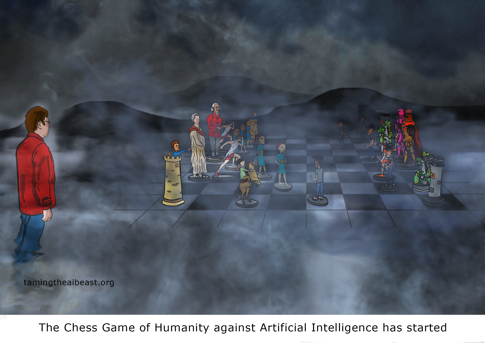

According to Chess.com, “The origins of chess are not exactly clear, though most believe it evolved from earlier chess-like games played in India almost two thousand years ago. The game of chess we know today has been around since the 15th century where it became popular in Europe.
Chess is a game played between two opponents on opposite sides of a board containing 64 squares of alternating colors. Each player has 16 pieces: 1 king, 1 queen, 2 rooks, 2 bishops, 2 knights, and 8 pawns. The goal of the game is to checkmate the other king. Checkmate happens when the king is in a position to be captured (in check) and cannot escape from capture.”
Many kids play video games that are addictive in a negative way. Some of the downsides to video game playing are: the intense need for instant gratification, playing non-stop for hours taking away time for connecting with others, addiction withdrawal symptoms when asked to cut down or stop their playing-mood swings and agitation increase.
Chess is one of many great alternatives to video games. I have been playing chess with grade school children during therapy sessions and have observed the following: